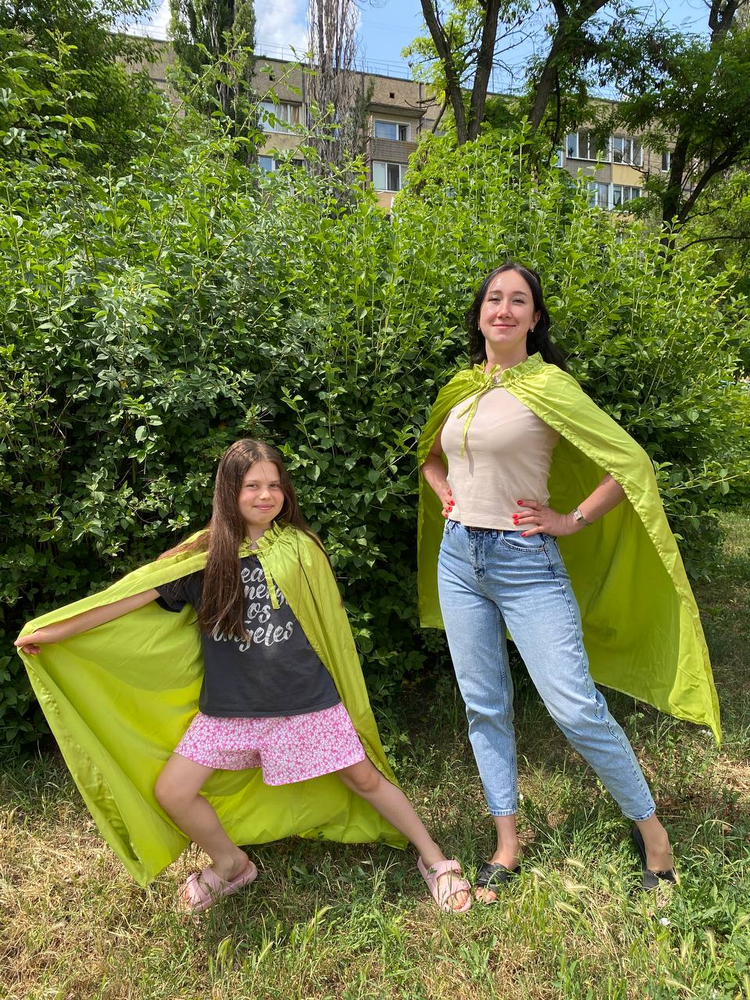
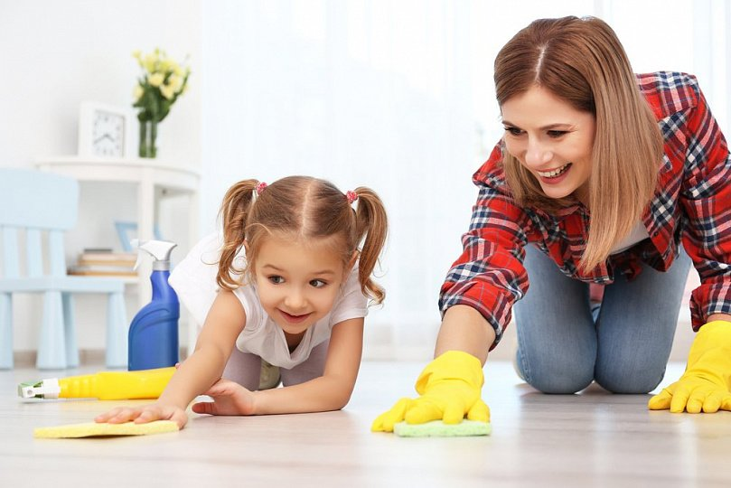
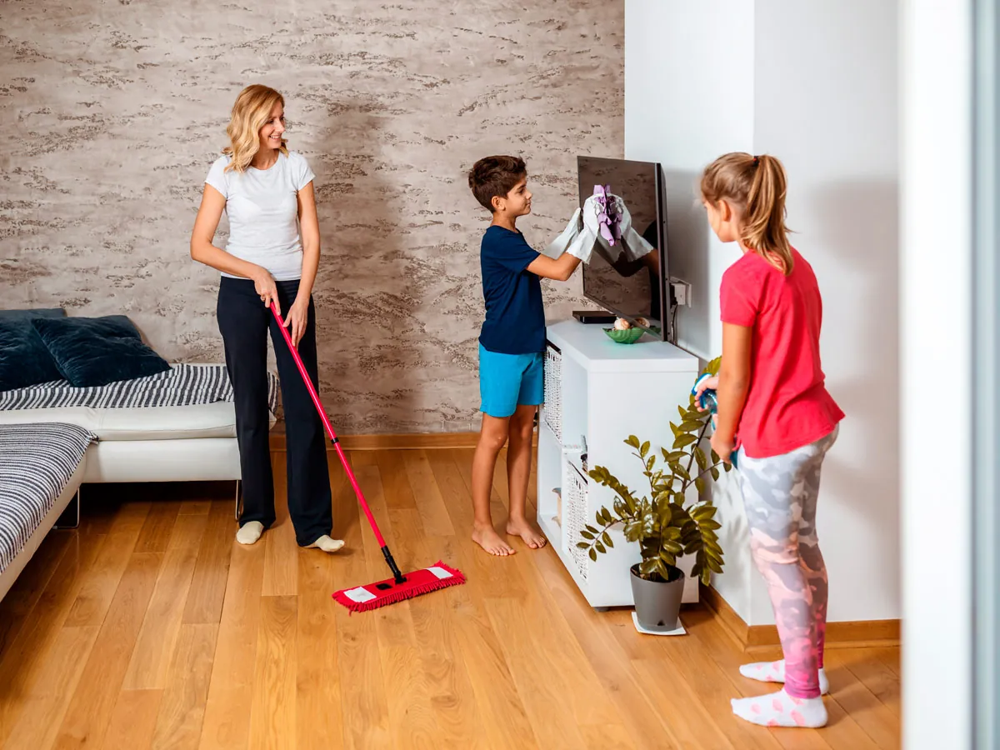
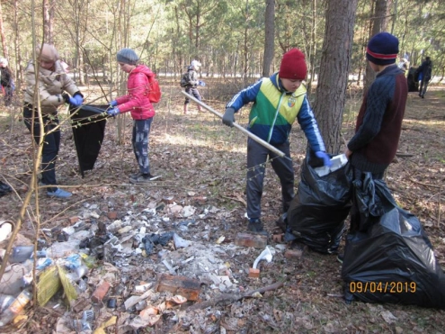

leya
| Моя суперсила | не боюся висоти,завжди знаходжу вихід з ситуацій, завжди допоможу |
| Які якості мене роблять гером | Добра,уважна та поважаю всіх,вмію вислухати,терпляча |
| Мій девіз | добро завжди переможе! |
| Мій символ |  |
| Моя команда | друзі,сім'я,сестра |
| Моя слабкість | боюсь потерять рідних |
Мій день у ролі супергероя
Зранку допомагаю готувати,вдень допомагаю прибирати або гуляю на вулиі, ввечері допомогаю готувати вечерю або розстеляю кровать
  Як я можу використати свою суперсилу на благо інших
- я можу допомагати по дому
- я можу допомогати в трудний час
- я можу робити приємно іншим
- я можу завжди допомогти коли потрібно
- я можу робити корисне для тварин
- я можу допомагати старим коли вони несуть щось важке